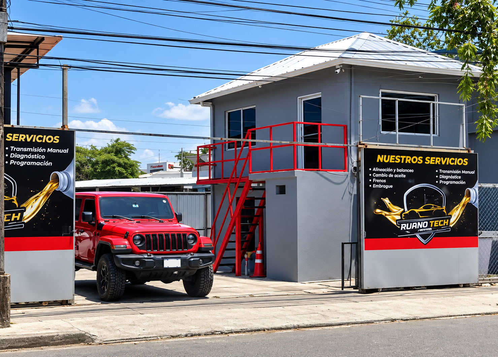

Tu taller de confianza en San Pedro Sula desde 2023
Ruano Tech Center nació en 2023 con el objetivo de ofrecer un servicio de mecánica automotriz de calidad, transparente y confiable en el corazón de San Pedro Sula.
Ubicados en Barrio Guamilito, nos hemos convertido en el taller de confianza para muchos sampedranos que buscan atención profesional, diagnósticos precisos y reparaciones duraderas.
Creemos que tu vehículo merece el mejor cuidado. Por eso combinamos experiencia técnica, herramientas adecuadas y un trato honesto en cada trabajo que realizamos.

Brindar servicios de mantenimiento y reparación automotriz de alta calidad, con diagnóstico confiable y atención personalizada, para que nuestros clientes viajen con seguridad y tranquilidad.
Ser el taller de referencia en San Pedro Sula, reconocido por la confianza, profesionalismo y excelencia en el cuidado de vehículos.
Confianza, calidad, transparencia, profesionalismo y compromiso con el cliente. Cada vehículo es tratado como si fuera propio.
No dejes tu vehículo en manos de cualquiera. En Ruano Tech Center trabajamos con el lema de calidad y confianza en cada detalle. Desde el diagnóstico hasta la entrega, te mantenemos informado y te damos la seguridad de un trabajo bien hecho.